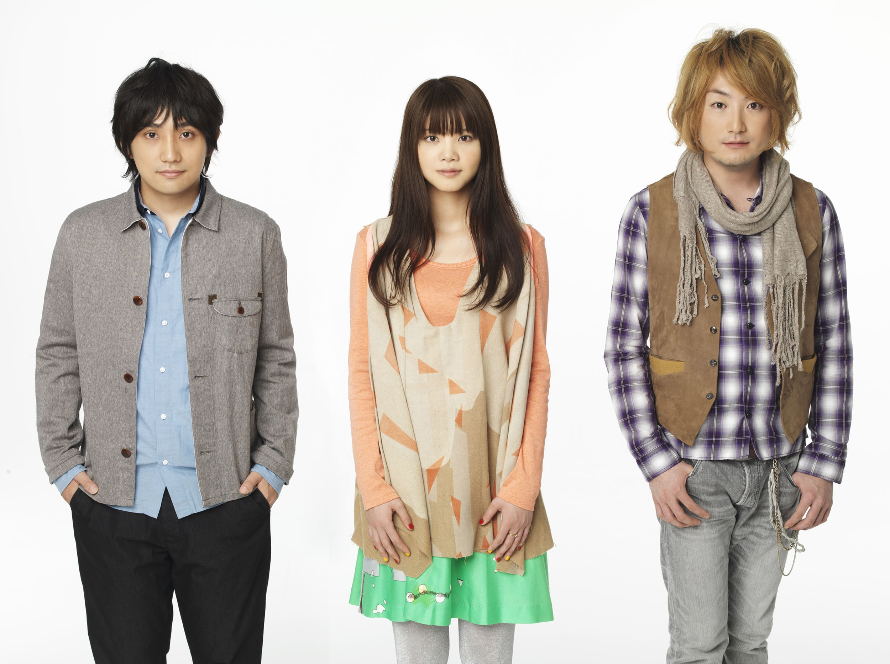

Untuk menandai selesainya restorasi lukisan Van Gogh 'The Bedroom', dan sebagai bagian dari Jumat malam acara yang diselenggarakan oleh Museum Van Gogh, AR Lab diminta untuk mengembangkan tiga instalasi didedikasikan untuk pameran 'Paul Gauguin: Terobosan dalam Modernitas '. Dengan instalasi ini kami bertujuan untuk memungkinkan bagi pengunjung untuk menemukan lukisan Van Gogh dengan cara yang menyenangkan dan menarik. Salah satu instalasi fitur lukisan 'The Bedroom' yang ditampilkan pada layar besar, dan dengan menggunakan dimodifikasi digital, pengunjung dapat mengungkapkan informasi tentang lukisan itu biasanya tidak dapat diakses, seperti x-ray, inframerah dan gambar ultra violet , atau bahkan bagian belakang lukisan itu. Kami akan menjelaskan dan kemudian
mendiskusikan instalasi augmented reality eksperimental, dan merefleksikan pelajaran untuk membuat interaksi dengan warisan budaya yang lebih menarik.
KATA KUNCI: Augmented Reality, Warisan Budaya, Teknik Visualisasi Inovatif, Desain, Interaksi.

1 PENDAHULUAN DAN KONTEKS
Untuk penekanan 'modernitas' dalam pameran mereka 'Paul Gauguin, Terobosan dalam Modernitas' Van Gogh Museum ingin memanfaatkan augmented reality, diidentifikasi oleh mereka sebagai teknologi baru yang menarik. Sebelumnya instalasi kami kembangkan untuk museum Belanda Museum Boijmans van Beuningen, Kröller-Müller Museum, dan Escher di Istana, mengajarkan kita bahwa interface yang modern menyebabkan interaksi dan dengan demikian meningkatkan pengalaman pengguna. Siswa dari Royal Academy of Art The Hague, di mana AR Lab didasarkan, terlibat dalam proyek-proyek ini. Sebagai bagian dari program elektif mereka, siswa bisa masuk untuk berpartisipasi dalam program warisan budaya ini. Wim van Eck, yang bekerja di AR Lab, mengawasi proyek.
Para siswa yang terlibat Marieke Bijster, Joris van Dam, Martin Hoorweg, Hannah Mjolsnes, Matthijs Munnik, Alrik Stelling, Susanne Vruwink dan Arjen Zuidgeest. Setelah brainstorming, siswa datang dengan berbagai kemungkinan interaksi yang melibatkan augmented reality. Akhirnya, kami menyadari tiga ide-ide ini, yang akan kita bahas pada bagian berikut, setelah memutar pendek untuk menjelaskan beberapa karakteristik cara kita menggunakan augmented reality.
PREVIOUS
NEXT